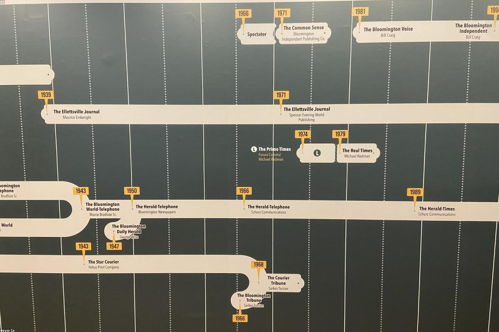

Il sistema giudiziario e il processo penale: tra teoria e realtà
L'Educazione Civica nel mio percorso è stata sviluppata attraverso un progetto interdisciplinare legato al mondo della giustizia e del diritto, in collaborazione con le Camere Penali. Il tema mi ha permesso di avvicinarmi concretamente al funzionamento del sistema giudiziario italiano, collegando quanto affrontato in classe con un'esperienza diretta.
Introduzione al tema
Nel mio percorso di Educazione Civica ho affrontato il tema della giustizia penale attraverso un progetto organizzato con le Camere Penali. Prima dell'esperienza pratica abbiamo svolto degli incontri a scuola con due avvocati, che ci hanno introdotto ai principi fondamentali del processo penale e al ruolo delle diverse figure coinvolte. Successivamente abbiamo avuto la possibilità di entrare in tribunale e assistere ad alcune udienze, osservando direttamente lo svolgimento dei processi.

Incontri con gli avvocati
La prima fase del progetto si è svolta a scuola, dove ho partecipato a due incontri con avvocati penalisti. Durante queste lezioni abbiamo approfondito il funzionamento del processo penale, il principio del contraddittorio e il ruolo delle parti: giudice, pubblico ministero e difesa. È stato interessante capire come la teoria giuridica si traduca poi in una struttura precisa di regole e procedure che garantiscono il corretto svolgimento del processo.
L'esperienza in tribunale
La parte più significativa del progetto è stata sicuramente la visita al tribunale. Qui ho potuto assistere ad alcune udienze reali, osservando direttamente il lavoro di avvocati, giudici e pubblici ministeri. Vedere il processo svolgersi dal vivo mi ha permesso di comprendere meglio la complessità del sistema giudiziario e l'importanza delle regole che lo disciplinano. È stata un'esperienza molto diversa dallo studio teorico, perché mi ha fatto entrare concretamente in un ambiente istituzionale reale.
Ruoli nel processo penale
Durante il progetto ho approfondito anche i diversi ruoli presenti in un processo penale. Il giudice ha il compito di garantire l'imparzialità e di emettere la sentenza, il pubblico ministero rappresenta lo Stato e sostiene l'accusa, mentre la difesa tutela gli interessi dell'imputato. Comprendere questi ruoli mi ha aiutato a capire meglio l'equilibrio su cui si basa il sistema giudiziario e l'importanza delle garanzie previste dalla Costituzione.

Riflessione sull'esperienza
Questa esperienza mi ha permesso di osservare da vicino un ambito che conoscevo solo in modo teorico. Entrare in tribunale e assistere a un processo ha reso più concreti concetti come giustizia, responsabilità e prova. Ho compreso quanto sia delicato il lavoro di chi opera in questo settore e quanto ogni decisione debba essere supportata da un'attenta valutazione dei fatti e delle prove.
Il progetto con le Camere Penali è stato uno dei momenti più significativi del mio percorso di Educazione Civica. Mi ha permesso di collegare le conoscenze apprese in classe con un'esperienza reale, offrendo una visione più completa del funzionamento della giustizia. È stata un'occasione importante per sviluppare maggiore consapevolezza sul valore delle istituzioni e sul ruolo che il diritto ha nella società.